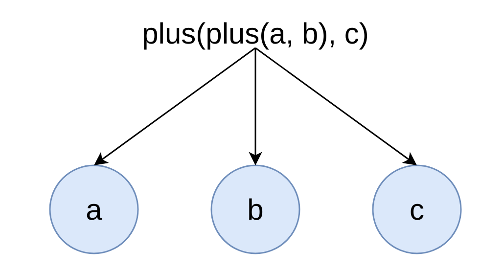

ExpressionTransform
Expressions are represented in DAG that has input, function, constant nodes.
SELECT a + b + c FROM test_table;

Maksim, developer of ClickHouse.
1. JIT basics
2. LLVM instruments
3. ClickHouse compilation of expressions
4. ClickHouse compilation of operator GROUP BY
JIT - Just in time compilation
Generate machine code and execute in runtime.
Examples: JVM Hotspot, V8.
int64_t sum(int64_t value_1, int64_t value_2)
{
return value_1 + value_2;
}
int main(int argc, char ** argv)
{
printf("Sum %ld\n", sum(1, 2));
return 0;
}
$ g++ -O2 jit_example.cpp -o jit_example
$ objdump -D jit_example | grep sum -A5
0000000000001180 <_Z3sumll>:
1180: f3 0f 1e fa endbr64
1184: 48 8d 04 37 lea (%rdi,%rsi,1),%rax /// %rax = %rdi * %rsi + 1
1188: c3 retq
1189: 0f 1f 80 00 00 00 00 nopl 0x0(%rax)
https://en.wikipedia.org/wiki/X86_calling_conventions#System_V_AMD64_ABI
https://en.wikipedia.org/wiki/Executable_and_Linkable_Format
$ readelf -S jit_example
There are 31 section headers, starting at offset 0x39a8:
Section Headers:
[16] .text PROGBITS 0000000000001060 00001060
00000000000001a5 0000000000000000 AX 0 0 16
[18] .rodata PROGBITS 0000000000002000 00002000
000000000000000d 0000000000000000 A 0 0 4
[25] .data PROGBITS 0000000000004000 00003000
0000000000000010 0000000000000000 WA 0 0 8
Key to Flags:
W (write), A (alloc), X (execute), M (merge), S (strings), I (info),
L (link order), O (extra OS processing required), G (group), T (TLS),
C (compressed), x (unknown), o (OS specific), E (exclude),
l (large), p (processor specific)
printf("Sum %ld\n", sum(1, 2));
$ readelf -x .rodata jit_example
Hex dump of section '.rodata':
0x00002000 01000200 53756d20 256c640a 00 ....Sum %ld..
$ objdump -D jit_example | grep sum -A5
0000000000001180 <_Z3sumll>:
1180: f3 0f 1e fa endbr64
1184: 48 8d 04 37 lea (%rdi,%rsi,1),%rax
1188: c3 retq
1189: 0f 1f 80 00 00 00 00 nopl 0x0(%rax)
$ readelf -x .text jit_example
Hex dump of section '.text':
0x00001060 f30f1efa 4883ec08 ba030000 00bf0100 ....H...........
...
0x00001180 f30f1efa 488d0437 c30f1f80 00000000 ....H..7........
0x00001190 f30f1efa 41574c8d 3d1b2c00 00415649 ....AWL.=.,..AVI
0x000011a0 89d64155 4989f541 544189fc 55488d2d ..AUI..ATA..UH.-
...
0x00001200 f30f1efa c3 ....
1144: 48 8d 04 37 lea (%rdi,%rsi,1),%rax
1148: c3 retq
int64_t jitSum(int64_t value_1, int64_t value_2)
{
/// Allocate page with READ + WRITE + EXEC permissions
char * res = static_cast(mmap(NULL, 4096, PROT_READ | PROT_WRITE | PROT_EXEC,
MAP_PRIVATE | MAP_ANON, -1, 0));
size_t instruction = 0;
/// lea (%rdi, %rsi, 1), %rax => rax = rdi + rsi * 1
res[instruction++] = 0x48;
res[instruction++] = 0x8d;
res[instruction++] = 0x04;
res[instruction++] = 0x37;
/// retq
res[instruction++] = 0xc3;
using SumFunction = int64_t (*)(int64_t, int64_t);
SumFunction func = reinterpret_cast<SumFunction>(res);
return func(value_1, value_2);
}
int main(int argc, char ** argv)
{
printf("Sum %ld\n", jitSum(1, 2));
return 0;
}
$ g++ -O2 jit_example.cpp -o jit_example
$ ./jit_example
$ Sum 3
void test_function()
{
printf("JIT example\n");
}
void jitTestFuncCall()
{
/// Allocate page with READ + WRITE + EXEC permissions
char * res = static_cast<char *>(mmap(NULL, 4096, PROT_READ | PROT_WRITE | PROT_EXEC,
MAP_PRIVATE | MAP_ANON, -1, 0));
size_t instruction = 0;
/// movabs [value], %rax
res[instruction++] = 0x48;
res[instruction++] = 0xb8;
ptrdiff_t test_function_raw_ptr = reinterpret_cast(test_function);
memcpy(res + instruction, &test_function_raw_ptr, sizeof(ptrdiff_t));
instruction += sizeof(ptrdiff_t);
/// callq *%rax
res[instruction++] = 0xff;
res[instruction++] = 0xd0;
/// retq
res[instruction++] = 0xc3;
using VoidFunction = void (*)(void);
VoidFunction func = reinterpret_cast<VoidFunction>(res);
func();
}
$ g++ -O2 jit_example.cpp -o jit_example
$ ./jit_example
$ JIT example
1. Optimizing compiler (passes can be configured).
2. Dynamic Linker. Resolve relocations. Allocate necessary code, data sections.
3. Allow to write code in LLVM IR (High level assembler).
4. LLVM tooling IRPrinters, AssemblyPrinters. JIT tooling gdb, perf support.
5. MCJIT, ORCJIT JIT compilers
1. Static Single Assignment (SSA). Variable is assigned only once.
2. Strongly typed.
3. Allows to map high level into low level.
/usr/bin/clang-12 -S -emit-llvm jit_example.cpp
; Function Attrs: noinline nounwind optnone uwtable mustprogress
define dso_local i64 @_Z3sumll(i64 %0, i64 %1) #0 {
%3 = alloca i64, align 8 /// alloca - Allocate memory on stack
%4 = alloca i64, align 8
store i64 %0, i64* %3, align 8 /// store - store value in pointer
store i64 %1, i64* %4, align 8
%5 = load i64, i64* %3, align 8 /// load - load value from pointer
%6 = load i64, i64* %4, align 8
%7 = add nsw i64 %5, %6 /// nsw - No Signed Wrap
ret i64 %7
}
TargetMachine MCContext LLVMContext IRBuilder Module Function BasicBlock PassManagerBuilder PassManager FunctionPassManager ObjectFile RTDyldMemoryManager JITSymbolResolver
TargetMachine — machine target specific information. Allowed CPU instructions, data layout, etc.
LLVMContext — context for global data and LLVM types
IRBuilder — builder for LLVM IR.
Module — container for functions.
Function — function container for BasicBlocks.
BasicBlock — container for LLVM IR instructions executed sequentially without branches except to exit.
PassManagerBuilder — builder for optimization passes.
PassManager — module passes.
FunctionPassManager — function passes.
ObjectFile — object file.
RuntimeDyld — dynamic linker. Takes object file and start dynamic linking, allocate and fill code and data sections. resolve relocations.
RTDyldMemoryManager — dynamic linker memory manager. Allocates necessary code, data sections during linking.
JITSymbolResolver — resolve external symbols during dynamic linking.
1. Create IRModule and fill it with IRFunctions. Apply optimizations using PassManagerBuilder, FunctionPassManager, PassManager.
2. Setup passes in PassManager to emit ObjectFile using TargetMachine and MCContext.
3. Create JITSymbolResolver for resolving external symbols. Example: memset.
4. Create RTDyldMemoryManager for dynamic linker.
5. Resolve relocations and create necessary code, data sections for ObjectFile using RuntimeDyld.
6. Get function symbols from compiled code using RuntimeDyld.
class CHJIT
{
struct CompiledModule
{
/// Size of compiled module code in bytes
size_t size;
/// Module identifier. Should not be changed by client
uint64_t identifier;
/// Map of compiled functions. Should not be changed by client.
/// After call to deleteCompiledModule compiled functions from module become invalid.
std::unordered_map<std::string, void *> function_name_to_symbol;
};
/// Compile module. Client must fill module with necessary IR code.
CompiledModule compileModule(std::function<void (llvm::Module &)> compile_function);
/// Delete compiled module. Pointers to functions from module become invalid after this call.
void deleteCompiledModule(const CompiledModule & module_info);
/// Register external symbol for CHJIT instance to use, during linking.
void registerExternalSymbol(const std::string & symbol_name, void * address);
/// Total compiled code size for module that are currently valid.
inline size_t getCompiledCodeSize() const;
}
auto jit = DB::CHJIT();
auto compiled_sum_module = jit.compileModule([](llvm::Module & module)
{
llvm::LLVMContext & context = module.getContext();
llvm::IRBuilder<> b(context);
llvm::Type * int64_type = b.getInt64Ty();
std::vector params = {int64_type, int64_type};
bool is_var_args = false;
llvm::FunctionType * func_type = llvm::FunctionType::get(int64_type, params, is_var_args);
llvm::Function::LinkageTypes linkage = llvm::Function::ExternalLinkage;
llvm::Function * function = llvm::Function::Create(func_type, linkage, "sum", module);
llvm::Value * first_argument = function->args().begin(); /// Get first argument
llvm::Value * second_argument = function->args().begin() + 1; /// Get second argument
llvm::BasicBlock * entry = llvm::BasicBlock::Create(context, "entry", function);
b.SetInsertPoint(entry);
llvm::Value * sum = b.CreateAdd(first_argument, second_argument); /// Sum arguments
b.CreateRet(sum); /// Return sum result
});
using SumFunc = int64_t (*)(int64_t, int64_t);
auto sum_func = reinterpret_cast(compiled_sum_module.function_name_to_symbol["sum"]);
printf("Sum %ld\n", sum_func(1, 2));
jit.deleteCompiledModule(compiled_sum_module);
llvm::Function * function = llvm::Function::Create(func_type, linkage, "sum", module);
llvm::Value * first_argument = function->args().begin(); /// Get first argument
llvm::Value * second_argument = function->args().begin() + 1; /// Get second argument
llvm::BasicBlock * entry = llvm::BasicBlock::Create(context, "entry", function);
b.SetInsertPoint(entry);
llvm::Value * sum = b.CreateAdd(first_argument, second_argument); /// Sum arguments
b.CreateRet(sum); /// Return sum result
IR:
define i64 @sum(i64 %0, i64 %1) {
entry:
%2 = add i64 %0, %1
ret i64 %2
}
Assembler:
.text
.file "jit0"
.globl sum # -- Begin function sum
.p2align 4, 0x90
.type sum,@function
sum: # @sum
# %bb.0: # %entry
leaq (%rdi,%rsi), %rax
retq
.Lfunc_end0:
.size sum, .Lfunc_end0-sum # -- End function
For each function pages must be allocated using mmap, or malloc with page alignment and mprotect. In kernel each mapping is stored as separate vma (virtual memory area).
Process maximum vma count is controlled by setting max_map_count. During mprotect with different areas permissions, area is splitted in 2 areas using split_vma.
Areas can also be merged if they are located side by side, using mprotect_fixup.
| R + W | | R + E | => | R + W | | R + W | => | R + W |
Because of split_vma, default max_map_count can be easily exceeded.
Non trivial allocator + maximum cache size is required to support W^X (write xor execute) policy. Because we must write data in area with READ + WRITE permissions, then use mprotect with READ + EXEC permissions, that will lead to vma_split.
Numeric columns - PODArray. Almost same as std::vector.
1. Use our Allocator with support of realloc.
2. No additional memset during resize.
3. Padding with 15 bytes at the end.
Nullable columns contain data column and UInt8 column bitmask is element null.
Const column is column with 1 constant value.
Non numeric columns does not support JIT compilation.
ClickHouse uses vectorized execution model. Data is processing in blocks. Block contain multiple columns with maxium 65536 rows. Each column is stored as a vector of primitive data types or their combination.
1. Better utilization for CPU caches and pipeline.
2. Data is processed using SIMD instructions.
EXPLAIN PIPELINE SELECT a + b + c FROM test_table
┌─explain───────────────────┐
│ (Expression) │
│ ExpressionTransform │
│ (SettingQuotaAndLimits) │
│ (ReadFromStorage) │
│ TinyLog 0 → 1 │
└───────────────────────────┘
Expressions are represented in DAG that has input, function, constant nodes.
SELECT a + b + c FROM test_table;
Takes arguments as columns and returns function result as column.
class IFunction
{
virtual ~IFunction() = default;
virtual ColumnPtr executeImpl(
const ColumnsWithTypeAndName & arguments,
const DataTypePtr & result_type,
size_t input_rows_count) const = 0;
...
}
Specializations using templates for different types. Example sum, multiply for different types combinations.
Specializations for constant columns. Example sum, multiply with constant column.
1. During DAG interpretation, data is moving between functions. Operations are not fused.
Example plus(plus(a, b), c)) first plus on columns a and b is performed and result stored in temporary column. Then plus on result of previous plus and column c is performed.
2. Code bloat for different function specializations using templates, increase binary size.
3. For AVX256, AVX512 instructions need to use runtime instructions specialization using CPUID. Necessary for distributing portable binary.
SELECT a + b + c FROM test_table;
SET compile_expressions = 1;
SELECT a + b + c FROM test_table;

1. Improve L1, L2 cache usages.
2. Less code to execute. It is placed on 1 page. Better usage of CPU branch predictor.
3. Eliminate indirections.
4. Multiple operations are fused in one function. More optimizations can be performed by compiler.
5. Using target CPU intructions.
Latency Comparison Numbers ---------------------------------- L1 cache reference 0.5 ns Branch mispredict 5 ns L2 cache reference 7 ns 14x L1 cache Mutex lock/unlock 25 ns Main memory reference 100 ns 20x L2 cache, 200x L1 cache Compress 1K bytes with Zippy 3,000 ns 3 us Send 1K bytes over 1 Gbps network 10,000 ns 10 us Read 4K randomly from SSD* 150,000 ns 150 us ~1GB/sec SSD Read 1 MB sequentially from memory 250,000 ns 250 us Round trip within same datacenter 500,000 ns 500 us
class IFunction
{
...
virtual ~IFunction() = default;
bool isCompilable(const DataTypes & arguments) const;
llvm::Value * compile(
llvm::IRBuilderBase &,
const DataTypes & arguments,
Values values) const;
...
}
template <typename A, typename B>
class FunctionPlusImpl
{
static llvm::Value * compile(
llvm::IRBuilder<> & b,
llvm::Value * left,
llvm::Value * right,
bool is_signed)
{
return left->getType()->isIntegerTy() ? b.CreateAdd(left, right) : b.CreateFAdd(left, right);
}
}
template <typename A, typename B>
class FunctionMultiplyImpl
{
static llvm::Value * compile(
llvm::IRBuilder<> & b,
llvm::Value * left,
llvm::Value * right,
bool is_signed)
{
return left->getType()->isIntegerTy() ? b.CreateMul(left, right) : b.CreateFMul(left, right);
}
}
llvm::Value * compileImpl(
llvm::IRBuilderBase & builder,
const DataTypes & types,
std::vector<llvm::Value *> values) const override
{
auto & b = static_cast<llvm::IRBuilder<>>(builder);
auto return_type = getReturnTypeImpl(types);
auto * head = b.GetInsertBlock();
auto * context = head->getContext();
auto * join = llvm::BasicBlock::Create(context, "join_block", head->getParent());
std::vector<std::pair<llvm::BasicBlock *, llvm::Value *>> returns;
for (size_t i = 0; i + 1 < types.size(); i += 2)
{
auto index = std::to_string(i);
auto * then = llvm::BasicBlock::Create(context, "then_" + index, head->getParent());
auto * next = llvm::BasicBlock::Create(context, "next_" + index, head->getParent());
b.CreateCondBr(nativeBoolCast(b, types[i], values[i]), then, next);
b.SetInsertPoint(then);
auto * value = nativeCast(b, types[i + 1], values[i + 1], return_type);
returns.emplace_back(b.GetInsertBlock(), value);
b.CreateBr(join);
b.SetInsertPoint(next);
}
returns.emplace_back(b.GetInsertBlock(), nativeCast(b, types.back(), values.back(), return_type));
b.CreateBr(join);
b.SetInsertPoint(join);
auto * phi = b.CreatePHI(toNativeType(b, return_type), returns.size());
for (const auto & [block, value] : returns)
phi->addIncoming(value, block);
return phi;
}
1. For each node in DAG get children_size, compilable_children_size
2. Sort nodes in descending order of compilable_children_size, to first compile nodes with most children.
3. Check if node can be compiled using heuristics currently we require node to contain at least 1 compilable children, and do not compile its children.
4. Compile node functions together into function that takes raw columns data pointers and return expression result.
4. Replace node in DAG with special LLVMFunction node. LLVMFunction execute method converts columns into raw data and call compiled function.
1. Binary operators. Example plus, minus, multiply, xor.
2. Unary operators. Example abs.
3. Logical functions. Example and, or, not.
4. Branch functions. Example if, multiIf.
5. Bit shift functions. Example bitShiftLeft
SELECT a + b * c + 5 FROM test_jit_merge_tree;
loop: ; preds = %loop, %entry
%19 = phi i64 [ 0, %entry ], [ %34, %loop ] /// Get counter phi node. If started from entry it is 0.
%20 = phi i64* [ %5, %entry ], [ %30, %loop ] /// Argument column phi node
%21 = phi i64* [ %9, %entry ], [ %31, %loop ] /// Argument column phi node
%22 = phi i64* [ %13, %entry ], [ %32, %loop ] /// Argument column phi node
%23 = phi i64* [ %17, %entry ], [ %33, %loop ] /// Result column phi node
%24 = load i64, i64* %20, align 8 /// Load argument current row
%25 = load i64, i64* %21, align 8 /// Load argument current row
%26 = load i64, i64* %22, align 8 /// Load argument current row
%27 = mul i64 %25, %26 /// Multiply b * c
%28 = add i64 %24, %27 /// Add a + result of multiply b * c
%29 = add i64 %28, 5 /// Add with constant 5
store i64 %29, i64* %23, align 8 /// Store value in result column
%30 = getelementptr inbounds i64, i64* %20, i64 1 /// Adjust pointer to next element
%31 = getelementptr inbounds i64, i64* %21, i64 1 /// Adjust pointer to next element
%32 = getelementptr inbounds i64, i64* %22, i64 1 /// Adjust pointer to next element
%33 = getelementptr inbounds i64, i64* %23, i64 1 /// Adjust pointer to next element
%34 = add i64 %19, 1 /// Increase counter
%35 = icmp eq i64 %34, %0br i1 %35, label %end, label %loop /// Check loop predicate
void aPlusBMulitplyCPlusConstant(
int64_t * a,
int64_t * b,
int64_t * c,
int64_t constant,
int64_t * result,
size_t size)
{
for (size_t i = 0; i < size; ++i)
{
*result = (*a) + (*b) * (*c) + constant;
++a;
++b;
++c;
++result;
}
}
.LBB0_8: # %vector.body
vmovdqu (%r11,%rax,8), %ymm1
vmovdqu (%r9,%rax,8), %ymm3
vmovdqu 32(%r11,%rax,8), %ymm2
vmovdqu 32(%r9,%rax,8), %ymm4
vpsrlq $32, %ymm3, %ymm5
vpsrlq $32, %ymm1, %ymm6
vpmuludq %ymm1, %ymm5, %ymm5
vpmuludq %ymm6, %ymm3, %ymm6
vpmuludq %ymm1, %ymm3, %ymm1
vpsrlq $32, %ymm4, %ymm3
vpmuludq %ymm2, %ymm3, %ymm3
vpaddq %ymm5, %ymm6, %ymm5
vpsllq $32, %ymm5, %ymm5
vpaddq %ymm5, %ymm1, %ymm1
vpsrlq $32, %ymm2, %ymm5
vpmuludq %ymm2, %ymm4, %ymm2
vpaddq (%r14,%rax,8), %ymm1, %ymm1
vpmuludq %ymm5, %ymm4, %ymm5
vpaddq %ymm3, %ymm5, %ymm3
vpsllq $32, %ymm3, %ymm3
vpaddq %ymm3, %ymm2, %ymm2
vpaddq 32(%r14,%rax,8), %ymm2, %ymm2
vpaddq %ymm0, %ymm1, %ymm1 /// in ymm0 there is constant 5. vpbroadcastq (%rbp), %ymm0
vmovdqu %ymm1, (%r10,%rax,8)
vpaddq %ymm0, %ymm2, %ymm2
vmovdqu %ymm2, 32(%r10,%rax,8)
addq $8, %rax
cmpq %rax, %r8
JIT standard expression compilation time is around 15 ms. Grows linearly with code size.
Typical compiled expression use 1 page for code section and 1 page for data section. 4096 * 2 = 8192 bytes on most configurations.
Introspection works inside ClickHouse using `CompileExpressionsMicroseconds`, `CompileExpressionsBytes` metrics.
SELECT
ProfileEvents['CompileExpressionsMicroseconds'] AS compiled_time,
ProfileEvents['CompileExpressionsBytes'] AS compiled_bytes
FROM system.query_log
WHERE compiled_time > 0;
┌─compiled_time─┬─compiled_bytes─┐
│ 16258 │ 8192 │
│ 26792 │ 8192 │
│ 15280 │ 8192 │
│ 11594 │ 8192 │
│ 14989 │ 8192 │
└───────────────┴────────────────┘
SELECT count() FROM hits
WHERE
((EventDate >= '2018-08-01')
AND (EventDate <= '2018-08-03')
AND (CounterID >= 34))
OR ((EventDate >= '2018-08-04')
AND (EventDate <= '2018-08-05')
AND (CounterID <= 101500))
— 649 533 033 rows per second.
SET compile_expressions = 1;
SELECT count() FROM hits
WHERE
((EventDate >= '2018-08-01')
AND (EventDate <= '2018-08-03')
AND (CounterID >= 34))
OR ((EventDate >= '2018-08-04')
AND (EventDate <= '2018-08-05')
AND (CounterID <= 101500))
— 865 491 052 rows per second.
— +33% performance improvement!
SELECT
number * 2 +
number * 3 +
number * 4 +
number * 5
FROM system.numbers
FORMAT Null
— 0 rows in set. Elapsed: 0.903 sec. Processed 329.23 million rows, 2.63 GB (364.78 million rows/s., 2.92 GB/s.
SET compile_expressions = 1;
SELECT
number * 2 +
number * 3 +
number * 4 +
number * 5
FROM system.numbers
FORMAT Null
— 0 rows in set. Elapsed: 1.602 sec. Processed 1.89 billion rows, 15.15 GB (1.18 billion rows/s., 9.46 GB/s.)
—
+323% performance improvement!
SET compile_expressions = 1;
WITH number AS x, if(x = 1, 1, if(x = 2, 2,
if(x = 3, 3, if(x = 4, 4, if(x = 5, 5,
if(x = 6, 6, if(x = 7, 7, if(x = 8, 8,
if(x = 9, 9, if(x = 10, 10,
if(x = 11, 11, 12))))))))))) AS res
SELECT sum(res)
FROM numbers(10000000)
— 0 rows in set. Elapsed: 0.150 sec. Processed 10.02 million rows, 80.18 MB (66.95 million rows/s., 535.56 MB/s.).
SET compile_expressions = 1;
WITH number AS x, if(x = 1, 1, if(x = 2, 2,
if(x = 3, 3, if(x = 4, 4, if(x = 5, 5,
if(x = 6, 6, if(x = 7, 7, if(x = 8, 8,
if(x = 9, 9, if(x = 10, 10,
if(x = 11, 11, 12))))))))))) AS res
SELECT sum(res)
FROM numbers(10000000)
— 0 rows in set. Elapsed: 0.061 sec. Processed 10.02 million rows, 80.18 MB (163.20 million rows/s., 1.31 GB/s.)
—
+244% performance improvement!


EXPLAIN SELECT sum(UserID)
FROM default.hits_100m_obfuscated GROUP BY WatchID
┌─explain──────────────────────────────────────┐
│ Expression ((Projection + Before ORDER BY)) │
│ Aggregating │
│ Expression (Before GROUP BY) │
│ SettingQuotaAndLimits │
│ ReadFromMergeTree │
└──────────────────────────────────────────────┘
class IAggregateFunction
{
...
virtual ~IAggregateFunction() = default;
/// AggregateDataPtr pointer to aggregate data for unique key during GROUP BY
/// Create empty data for aggregation with `placement new` at the specified location.
virtual void create(AggregateDataPtr place) const = 0;
/** Adds a value into aggregation data on which place points to.
* columns points to columns containing arguments of aggregation function.
* row_num is number of row which should be added.
*/
virtual void add(
AggregateDataPtr place,
const IColumn ** columns,
size_t row_num,
Arena * arena) const = 0;
/// Merges state (on which place points to) with other state of current aggregation function.
virtual void merge(AggregateDataPtr place, ConstAggregateDataPtr rhs, Arena * arena) const = 0;
/// Inserts results into a column. This method might modify the state (e.g.
/// sort an array), so must be called once, from single thread.
virtual void insertResultInto(AggregateDataPtr place, IColumn & to, Arena * arena) const = 0;
...
}
SELECT
sum(UserID),
sum(ClientIP),
sum(CounterClass),
sum(CounterID),
sum(WatchID)
FROM default.hits_100m_obfuscated
GROUP BY WatchID
1. For each unique key create aggregate data for each function.
2. For each key add value for aggregate data for each function.
3. For each unique key merge aggregate data for each function, in case multiple threads are used.
4. For each unique key insert result into final columns for each function.
1. A lot of virtual function calls.
2. For Nullable columns we have Nullable wrapper, additional indirection layer.
3. Aggregation combinators. -If, -Array, additional indirection layer.
Fuse multiple aggregate functions actions into one.
Functions require 4 actions create, add, merge, insert. Fuse them and compile into 4 functions.
1. Create function for multiple aggregate functions.
2. Add function for multiple aggregate functions.
3. Merge function for mutiple aggregate function.
4. Insert final result function for multiple aggregate functions.
1. Most common aggregate functions sum, count, min, max, avg, avgWeighted.
2. Combinators -If.
3. Nullable aggregate function adaptor.
SELECT
sum(UserID),
avg(ClientIP),
sum(CounterClass),
min(CounterID),
max(WatchID)
FROM default.hits_100m_obfuscated
GROUP BY WatchID
SELECT
sum_avg_sum_min_max(
UserID,
ClientIP,
CounterClass,
CounterID,
WatchID)
FROM default.hits_100m_obfuscated
GROUP BY WatchID
SELECT
sum(UserID),
sum(ClientIP),
sum(CounterClass),
sum(CounterID),
sum(WatchID)
FROM default.hits_100m_obfuscated
GROUP BY WatchID
— 0 rows in set. Elapsed: 5.504 sec. Processed 100.00 million rows, 2.50 GB (18.17 million rows/s., 454.21 MB/s.)
SET compile_aggregate_expression = 1;
SELECT
sum(UserID),
sum(ClientIP),
sum(CounterClass),
sum(CounterID),
sum(WatchID)
FROM default.hits_100m_obfuscated
GROUP BY WatchID
— 0 rows in set. Elapsed: 4.146 sec. Processed 100.00 million rows, 2.50 GB (24.12 million rows/s., 603.06 MB/s.)
— +34% performance improvement!
WITH (WatchID % 2 == 0) AS predicate
SELECT
minIf(UserID, predicate),
minIf(ClientIP, predicate),
minIf(CounterClass, predicate),
minIf(CounterID, predicate),
minIf(WatchID, predicate)
FROM default.hits_100m_obfuscated
GROUP BY WatchID
— 0 rows in set. Elapsed: 6.234 sec. Processed 100.00 million rows, 2.50 GB (16.04 million rows/s., 401.05 MB/s.)
SET compile_aggregate_expression = 1;
WITH (WatchID % 2 == 0) AS predicate
SELECT
minIf(UserID, predicate),
minIf(ClientIP, predicate),
minIf(CounterClass, predicate),
minIf(CounterID, predicate),
minIf(WatchID, predicate)
FROM default.hits_100m_obfuscated
GROUP BY WatchID
— 0 rows in set. Elapsed: 4.146 sec. Processed 100.00 million rows, 2.50 GB (24.12 million rows/s., 603.06 MB/s.)
— +71% performance improvement!
JIT compilation improves performance of expression evaluation and aggregation.
For expression evaluation improve performance in 1.5-3 times (for some cases more than 20 times).
For aggregation improve performance in 1.15-2 times.